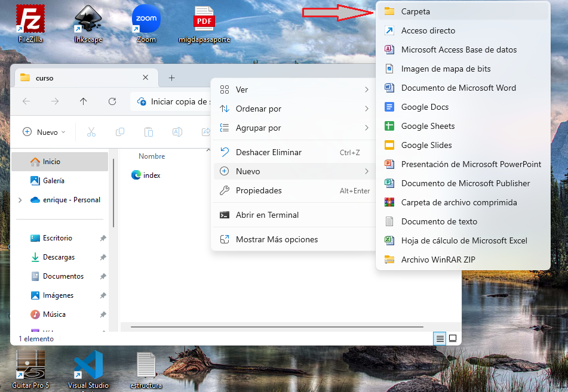
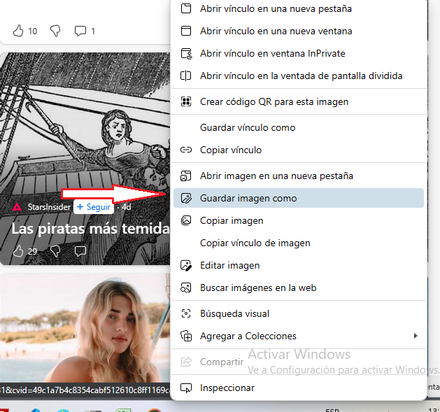
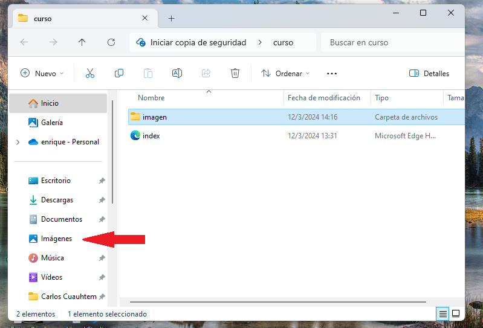
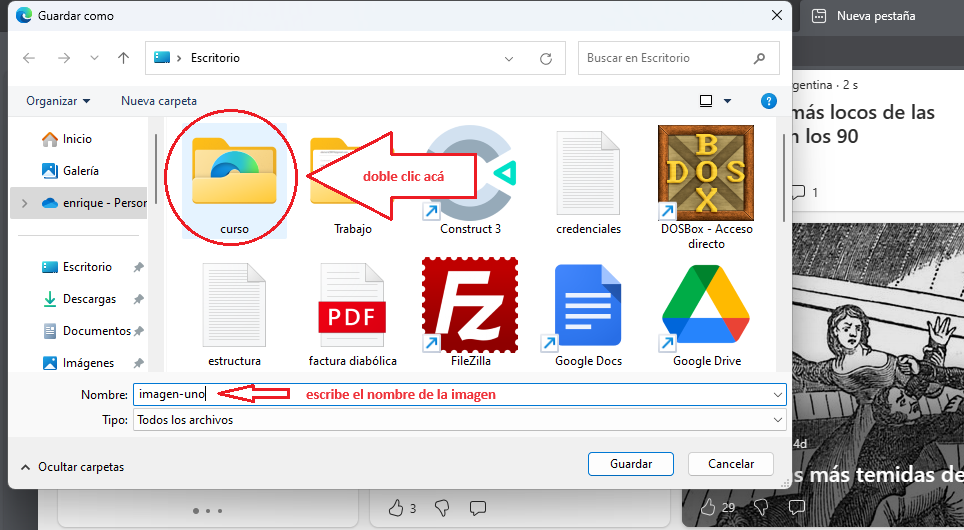
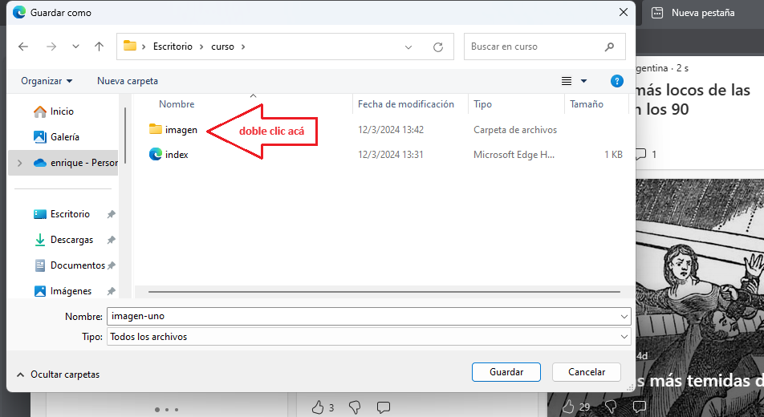
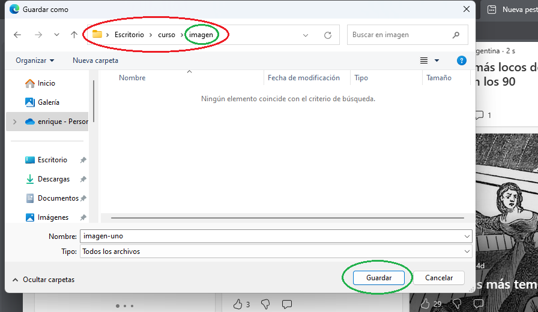
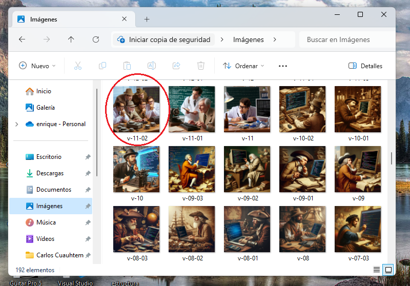
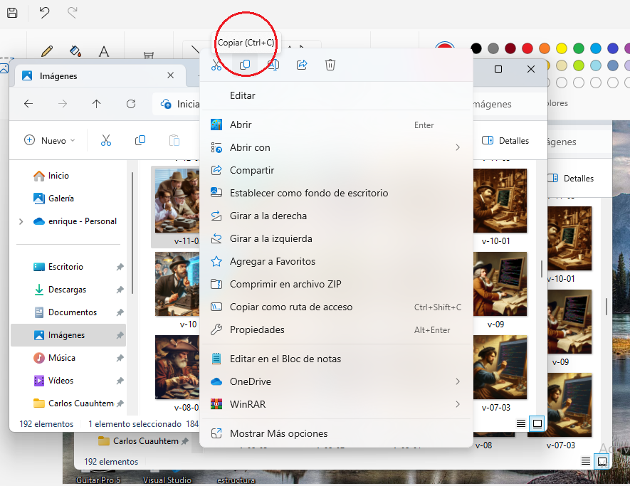
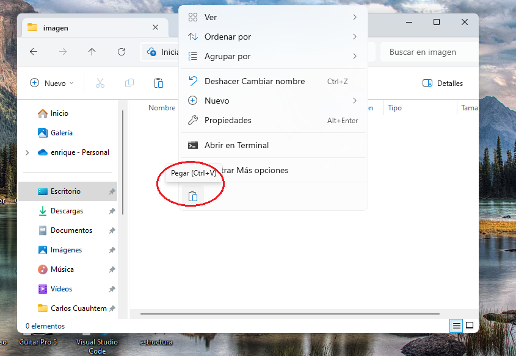

RUTAS
Este es, al parecer, el tema más dificil de todo este asunto, pero también parece que es así porque no se toma mucho en cuenta en los cursos para principiantes ya que parece ser algo que debería la gente ya saber, pero bueno, sabemos que no es así.
En fin, las rutas son el camino a recorrer para llegar a un archivo determinado, parece obvio, pero sólo la práctica nos permitirá asimilar esta información de forma correcta.
Vamos a trabajar con imágenes ya que es una forma bastante gráfica de asimilar la explicación, pero bien podríamos trabajar con cualquier otro archivo. Bien, ingresemos a nuestro espacio de trabajo, es decir, a nuestra carpeta, y dentro vamos a crear otra carpeta, la vamos a llamar imagen, y dentro de esta carpeta nueva vamos a colocar una imagen cualquiera que podríamos decargar de internet o copiar una que ya tengamos, voy a explicar las dos formas por si no está claro este particular.
- descargando una imagen de internet: abrimos el navegador y buscamos la imagen que deseamos, con el botón derecho del ratón clicamos sobre la imagen y buscamos en el menú desplegable la opción "guargar imagen como", cuando se abra el cuadro de guardado, buscamos la carpeta en la que vamos a colocar la imagen (que vendría a ser la carpeta que está dentro de la carpeta principal o sub-carpeta), le escribimos un nombre y pulsamos el botón guardar 
- colocando una imagen que tenemos en nuestro ordenador, equipo, terminal o computador: abrimos la carpeta en la que se encuentra la imagen que deseamos (en mi caso, buscaré en la carpeta "mis imágenes") elegimos la imagen que deseamos y desplegamos el menú haciendo clic con el botón derecho del ratón (imagino que no pensaron usarlo tanto). y elegimos la opción "copiar" ahora simplemente entramos en la carpeta imagen que está dentro de nuestra carpeta principal o espacio de trabajo y con el botón derecho del ratón hacemos clic en cualquier área y del menú que se muestra eleginos la opción "pegar" 





